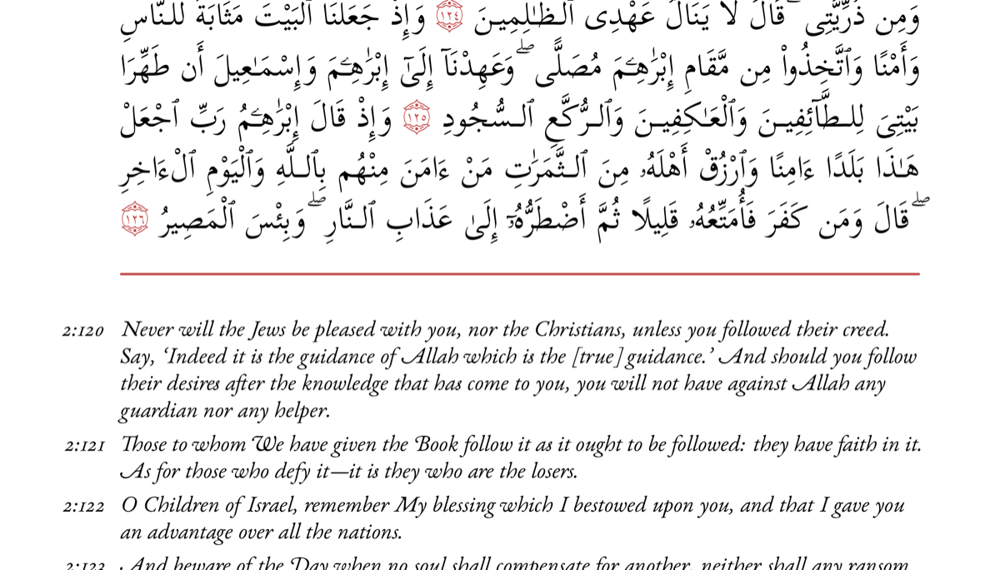
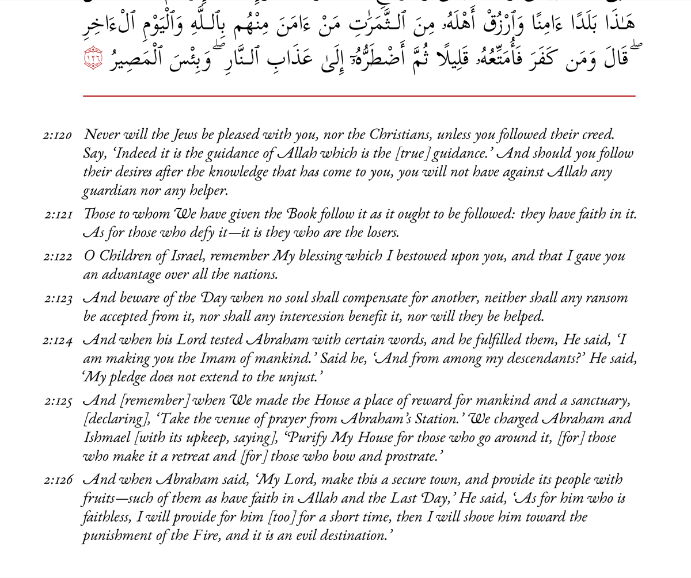

No comprehensive tafsir in English
No single-volume commentary based on Ahlulbayt's teachings currently exists in accessible English.
In His name, the Most High
An accessible one-volume commentary on the whole Qur'an, based on the teachings of the Prophet ﷺ and his Household (a.s.).

English-speaking Shi'a Muslims lack a comprehensive, accessible commentary on the Qur'an rooted in the teachings of the Ahlulbayt. The gap is quiet, generational, and growing.
No single-volume commentary based on Ahlulbayt's teachings currently exists in accessible English.
Millions more globally lack resources reflecting their theological perspective and scholarly tradition.
Teachers and seminaries assemble resources from fragmented and often inconsistent sources.
Young English-speaking Shi'a Muslims are increasingly cut off from reliable, accessible scholarship.
Exposed to competing ideologies, youth need the intellectual tools to anchor and defend their faith.
A unique dual-page design, structured so readers can read the Arabic and its commentary in direct tandem — clear, paced, and always in context.


Sample page — Sūrat al-Baqara
Each page equals one page of the Mushaf, preserving the rhythm of the text.
Based on a modified Ali Quli Qara'i translation, chosen for fidelity and readability.
Commentary synthesised from more than thirty classical and contemporary sources.
Readers can trace any reflection back to its source and conduct further study.
Half the Qur'an already translated. Editing, typesetting, and community outreach all proceed in parallel — not sequentially — so the manuscript and its audience arrive together.
Translation through verse 18:83
Last updated: 18 Apr 2026
£25,000 raised of £60,000 · 42%
£35,000 still needed to fully fund the project.